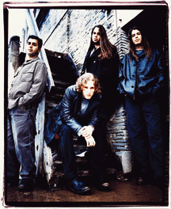
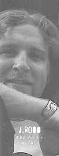
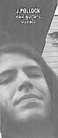
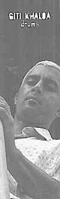

Petite histoire
Seven Mary Three est né en 1992 quand les deux Jason se rencontrèrent au College William & Mary en Virginie. Au début, ils jouaient en duo, Ross au chant et Pollock à la guitarre.Plus tard, Giti Khalsa et le bassite Casey Daniel les rejoignèrent et le groupe ainsi formé commença alors à sillonner les routes et surtout les clubs du Sud-Est.
Voici donc la composition actuelle du groupe :


Jason Ross
lead vocals,guitars
Jason Pollock
lead guitars,vocals

Giti Khalsa
Drums
Casey Daniel
Bass